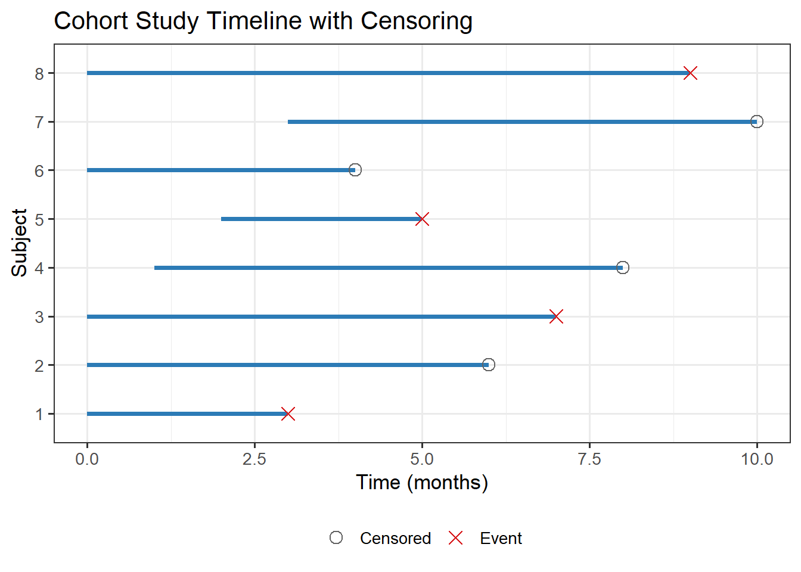

systemfonts and textshaping have been compiled with different versions of Freetype. Because of this, textshaping will not use the font cache provided by systemfonts1 Measures of Mortality and Morbidity
Survival analysis begins not with equations but with data — specifically, with counts of people or organisms dying, falling ill, or failing over time. This chapter introduces the demographic and epidemiological measures that form the empirical foundation of survival analysis. These measures predate formal survival methods by centuries, yet they remain indispensable: every life table, every actuarial calculation, and every clinical trial protocol rests on the concepts introduced here.
We cover rates and ratios, the central mortality measures used in vital statistics, the distinction between prevalence and incidence, and the two key measures of association — relative risk and odds ratio — that arise naturally when comparing mortality experiences across groups.
1.1 Ratios, Proportions, and Rates
Three closely related but distinct measures pervade the literature:
Ratio: A quotient \(A/B\) where the numerator is not a subset of the denominator.
Example: Sex ratio = number of males / number of females.
Proportion: A quotient \(A/(A+B)\) where the numerator is a subset of the denominator. A proportion always lies in \([0, 1]\).
Example: Case fatality proportion = deaths from disease / total cases of disease.
Rate: A measure of occurrence per unit of population per unit of time.
Example: Death rate = deaths per 1,000 population per year.
Rates are the most informative measure for comparing populations of different sizes, but they require a clear specification of the population at risk and the time period.
Common Confusion
A “rate” in everyday language is often just a proportion. In epidemiology and demography, a true rate must have time in the denominator (explicitly or implicitly). The distinction matters when computing person-years of exposure.
1.2 Crude Birth Rate
The Crude Birth Rate (CBR) is the number of live births per 1,000 mid-year population in a given year:
\[\text{CBR} = \frac{B}{P} \times 1000\]
where \(B\) = total live births during the year and \(P\) = mid-year population.
“Crude” means the rate is computed for the entire population without adjustment for age or sex composition.
1.3 Mortality Measures
1.3.1 Crude Death Rate
\[\text{CDR} = \frac{D}{P} \times 1000\]
where \(D\) = total deaths during the year. CDR is useful for broad comparisons but can be misleading when populations have very different age structures.
1.3.2 Age-Specific Death Rate
\[\text{ASDR}_x = \frac{D_x}{P_x} \times 1000\]
where \(D_x\) and \(P_x\) are deaths and mid-year population in the age group \([x, x+n)\).
1.3.3 Infant Mortality Rate
\[\text{IMR} = \frac{\text{Deaths of children under 1 year}}{\text{Live births}} \times 1000\]
IMR is widely used as an indicator of overall public health and quality of life.
1.3.4 Standardised Mortality Ratio (SMR)
When two populations have different age distributions, crude death rates are not directly comparable. The SMR solves this by comparing observed deaths in the study population to those expected if the standard population’s age-specific rates applied:
\[\text{SMR} = \frac{O}{E} \times 100 = \frac{\sum_x D_x^{\text{study}}}{\sum_x P_x^{\text{study}} \times m_x^{\text{standard}}} \times 100\]
\(\text{SMR} > 100\) indicates higher mortality than the standard; \(\text{SMR} < 100\) indicates lower.
smr_data <- data.frame(
Age_Group = c("0–14","15–44","45–64","65+"),
Pop_Study = c(12000, 25000, 18000, 5000),
Deaths_Study = c(18, 35, 144, 250),
Std_Rate = c(1.5, 1.4, 8.0, 50.0) # per 1000 per year
)
smr_data <- smr_data |>
mutate(Expected = Pop_Study * Std_Rate / 1000)
total_O <- sum(smr_data$Deaths_Study)
total_E <- sum(smr_data$Expected)
smr_val <- total_O / total_E * 100
smr_data |>
mutate(across(where(is.numeric), \(x) round(x, 1))) |>
kbl(col.names = c("Age Group","Pop (Study)","Deaths (Study)",
"Std Rate (/1000)","Expected Deaths"),
align = "c") |>
kable_styling(bootstrap_options = c("striped","hover","condensed"),
full_width = FALSE, position = "center") |>
footnote(general = paste0("Total observed = ", total_O,
"; Total expected = ", round(total_E,1),
"; SMR = ", round(smr_val,1)))| Age Group | Pop (Study) | Deaths (Study) | Std Rate (/1000) | Expected Deaths |
|---|---|---|---|---|
| 0–14 | 12000 | 18 | 1.5 | 18 |
| 15–44 | 25000 | 35 | 1.4 | 35 |
| 45–64 | 18000 | 144 | 8.0 | 144 |
| 65+ | 5000 | 250 | 50.0 | 250 |
| Note: | ||||
| Total observed = 447; Total expected = 447; SMR = 100 |
1.4 Person-Years of Exposure
In long-term cohort studies (e.g., longitudinal crop trials or animal feeding experiments), subjects enter and leave at different times. Simply dividing by the number of subjects ignores these varying exposure periods.
Person-years accumulate the actual time each subject was at risk:
\[\text{Incidence rate} = \frac{\text{Number of new cases}}{\sum_{i=1}^n t_i^*}\]
where \(t_i^*\) is the time subject \(i\) was under observation (whether they experienced the event or were censored).
Agricultural Application
In a field trial monitoring time-to-pest-infestation across 50 plots over 3 seasons, some plots are harvested early (censored). Person-plot-seasons must be used in the denominator, not simply 50 × 3.
set.seed(7)
py_data <- data.frame(
id = factor(1:8),
enter = c(0,0,0,1,2,0,3,0),
exit = c(3,6,7,8,5,4,10,9),
event = c(TRUE,FALSE,TRUE,FALSE,TRUE,FALSE,FALSE,TRUE)
)
ggplot(py_data, aes(y = id)) +
geom_segment(aes(x = enter, xend = exit, yend = id),
linewidth = 1.4, colour = "#2C7BB6") +
geom_point(aes(x = exit,
colour = event, shape = event), size = 3.5) +
scale_colour_manual(values = c("TRUE"="#D7191C","FALSE"="#636363"),
labels = c("Censored","Event")) +
scale_shape_manual(values = c("TRUE"=4,"FALSE"=1),
labels = c("Censored","Event")) +
labs(title = "Cohort Study Timeline with Censoring",
x = "Time (months)", y = "Subject",
colour = NULL, shape = NULL) +
theme(legend.position = "bottom")
1.5 Prevalence and Incidence
Two fundamental measures of disease burden:
| Measure | Definition | When to use |
|---|---|---|
| Prevalence | Proportion of population currently with condition | Cross-sectional surveys; chronic disease burden |
| Incidence | Rate of new cases per unit time | Aetiology studies; tracking epidemics |
The approximate relationship is:
\[\text{Prevalence} \approx \text{Incidence} \times \text{Mean Duration}\]
This formula (sometimes called Little’s Law in epidemiology) implies that a high-prevalence disease may have either high incidence or long duration (or both).
1.6 Relative Risk and Odds Ratio
When comparing mortality or disease rates between two groups (exposed vs unexposed), two measures are routinely used.
1.6.1 Relative Risk (Risk Ratio)
Let \(p_1\) = risk in exposed group and \(p_0\) = risk in unexposed group:
\[\text{RR} = \frac{p_1}{p_0}\]
- \(\text{RR} = 1\): no association
- \(\text{RR} > 1\): exposure increases risk
- \(\text{RR} < 1\): exposure is protective
RR is the natural measure in prospective (cohort) studies.
1.6.2 Odds Ratio
\[\text{OR} = \frac{p_1/(1-p_1)}{p_0/(1-p_0)}\]
The OR is the only association measure available from case-control studies (where total person-time cannot be computed). For rare events (\(p_1, p_0 < 0.1\)), OR \(\approx\) RR.
ct <- matrix(c(80, 120, 30, 270), nrow = 2,
dimnames = list(c("Exposed","Unexposed"),
c("Disease","No Disease")))
ct_df <- as.data.frame.matrix(ct) |>
mutate(Total = rowSums(across(everything())),
Risk = Disease / Total)
ct_df |>
kbl(align = "c",
col.names = c("Disease","No Disease","Total","Risk")) |>
kable_styling(bootstrap_options = c("striped","condensed"),
full_width = FALSE, position = "center") |>
add_header_above(c(" " = 1, "Outcome" = 2, " " = 2))
# Compute measures
p1 <- ct[1,1] / sum(ct[1,])
p0 <- ct[2,1] / sum(ct[2,])
rr <- p1 / p0
or <- (ct[1,1]*ct[2,2]) / (ct[1,2]*ct[2,1])
cat(sprintf("\nRisk (exposed) = %.3f\nRisk (unexposed) = %.3f\n", p1, p0))
Risk (exposed) = 0.727
Risk (unexposed) = 0.308cat(sprintf("Relative Risk = %.2f\nOdds Ratio = %.2f\n", rr, or))Relative Risk = 2.36
Odds Ratio = 6.00| Disease | No Disease | Total | Risk | |
|---|---|---|---|---|
| Exposed | 80 | 30 | 110 | 0.7272727 |
| Unexposed | 120 | 270 | 390 | 0.3076923 |
Quotes to Inspire
“To call in the statistician after the experiment is done may be no more than asking him to perform a post-mortem examination: he may be able to say what the experiment died of.”
— Sir Ronald A. Fisher